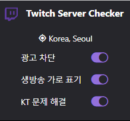
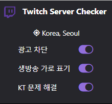

목차
- 기능
- 작동
- 문의
기능
1. 한글에서만 "생방송" 표기가 세로로 되던 문제를 해결해줍니다.
공식적으로 수정 반영되어 기능에서 제거

2. 광고차단 (βeta)
3. KT 버퍼 해결(Pro 버전) : 서버를 자동으로 한국서버로 잡아줍니다.
4. 서버 위치를 확인해줍니다.
1. 한글에서만 "생방송" 표기가 세로로 되던 문제를 해결해줍니다.
공식적으로 수정 반영되어 기능에서 제거
2. 광고차단 (βeta)
3. KT 버퍼 해결(Pro 버전) : 서버를 자동으로 한국서버로 잡아줍니다.
4. 서버 위치를 확인해줍니다.
: 꺼진 상태입니다.
: 켜진 상태입니다.